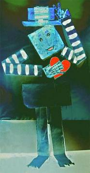

For all its beauty, Venice has been cursed.
The shades of Shylock and von Aschenbach
lurk behind closed doors. Soon after dark
Sebastian Flyte inspires a giant thirst
on balconies above the Grand Canal,
where discontented sons of millionaires
console each other, high on Baudelaire’s
philosophy of life, Les Fleurs du mal.
Come Carnival they’ll all be sporting masks,
assuming alter egos by the score.
They’ll carry on the way they did before
but now feel free to flaunt their pocket flasks.
A lethal dose elicits no surprise.
Each gondolier is Charon in disguise.
[ First published in The Shit Creek Review ]
Dunderhead
You have no earthly means of challenging
oblivion. Its menace snags your fears;
its malice smothers love; its madness sneers
at composition. Every note you sing
might just as well, well, never have been sung.
You think by fastening your windows tight
you’ll cheat that hound from hell? Hell, every night
it stands outside and drools with triple tongue!
So much for noble dreams. So much for rules.
So much for truth and beauty. In the end
you’ll go out howling. How can you pretend
compliance is a safety net for fools,
yet practise it yourself? You dunderhead!
What good is recognition once you’re dead?
Duncan Gillies MacLaurin was born in Glasgow in 1962, sent to boarding school in Perthshire, and awarded an exhibition in Classics to Oxford. He left without his degree, and after a short spell at London University he spent two years busking in the streets of Europe. In 1986 he met Danish journalist and writer, Ann Bilde, in Italy and went to live in Denmark. He took degrees in English and Latin at Aarhus University and since 1995 has taught at a high school in Esbjerg.